Options
Call Options
A call option is a contract that allows the buyer the option to
purchase an asset for a pre-specified price on or before a particular
date. It has the following
ingredients:
- Underlying asset: The asset that may be bought or sold when the
option is exercised.
- Maturity (exercise) date: The date at which the contract expires.
- Strike price: The pre-specified price at which the underlying can be
purchased.
Call Options
The buyer of the option is not obligated to buy the underlying asset
at the strike price.
- The buyer has the option to buy.
- The seller of the call option is obligated to sell the
underlying if the buyer wants to exercise the option.
- If the price of the underlying asset is above the strike price on
the maturity date, the buyer will exercise. Why?
- If the price of the underlying asset is below the strike price on
the maturity date, the buyer will not exercise. Why?
Call Options
The call option has no downside risk for the buyer.
- The buyer is better off if the underlying asset price rises.
- If the underlying asset price falls, the buyer doesn’t lose
anything.
Call Options
However, the seller of the option only faces downside risk.
- The seller is worse off if the underlying asset price rises.
- If the underlying asset price falls, the seller doesn’t gain
anything.
The seller must be compensated for taking the risk of having to sell
the underlying for a low price.
- The buyer pays a premium to purchase the option contract.
Call Option Example
On March 8th 2013, stock for Chipotle Mexican Grill (CMG) sold for
$321.84 and an option contract with a strike price of $320.00 and
maturity date of March 15th 2013 cost $5.30.
- If the price of Chipotle is less than $320.00 on March 15th, the
option will not be exercised.
- If the price is $325.00 on March 15th, the option holder (buyer)
will exercise the contract.
- The gain to the buyer will be $5.00.
Call Option Example
- Remember that the contract cost $5.30, so the buyer has a net loss
of $0.30.
- If the price on March 15th is greater than $325.30, the buyer will
have a net gain.
Put Options
A put option is a contract that allows the buyer the option to sell an
asset (the underlying) for a pre-specified price (the strike) on or
before a particular date (the maturity date).
- The buyer of the put benefits when the price of the underlying asset
falls below the strike.
- The buyer of the option can buy the asset at the market price and
sell it at the higher strike price (to the writer of the put
option).
- If the price of the asset rises above the strike, the buyer will not
exercise the option and has no downside loss.
Put Options
- The put is an option (not an obligation) for the buyer to sell
the asset at the strike price.
- The writer of the put is under obligation to buy the asset
whenever the buyer chooses to exercise the option.
Put Option Example
Consider again Chipotle stock which sold for $321.84 on March
8th 2013.
- A put option with a strike price of $320.00 and a maturity date of
March 15th 2013 costs $3.30.
- If the price of the stock is above $320.00 on March 15th, the
option will not be exercised.
Put Option Example
- Suppose the price is below $320.00 on March 15th: $315.00.
- The buyer of the put will exercise the contract, buying the stock
for $315.00 on the market and selling to the put writer for
$320.00.
- The gross profit would be $320.00 - $315.00 = $5.00.
- The net profit would be: $5.00 - $3.30.
Moneyness
An option is
- In the money when its strike price would produce profits for the
holder.
- Out of the money when exercise would be unprofitable.
- At the money when the strike price is equal to the asset price.
The moneyness can be determined at any time, as if the option were
exercised at that instant.
American vs. European
- An American option allows the buyer to exercise the contract on or
before the maturity date.
- A European option only allows exercise on the maturity date.
- Since an American option encompasses all of the possibilities of a
European option, it should always be more valuable and cost more.
- As the name denotes, virtually all options traded in the U.S. are of
the American flavor.
Notation
We use the following notation:
\[T = \text{Maturity date}\]
\[S_t = \text{Underlying asset price at time } t\]
\[X = \text{Strike Price}\]
\[C_t = \text{Value of a call option at time } t\]
\[P_t = \text{Value of a put option at time } t\]
Call Option Payoff (Buyer)
The payoff to a call option holder (buyer) at expiration is
\[\begin{split}C_T = \begin{cases} S_T - X, & \text{if } S_T > X \\ 0, &
\text{if } S_T \leq X. \end{cases}\end{split}\]
- If the asset price is above the strike, the holder can buy the
underlying for \(X\) and immediately sell it for \(S_T\),
yielding a profit of \(S_T-X\).
- If the asset price is below the strike, the option is worthless.
Call Option Payoff (Buyer)
The payoffs above did not account for the cost of the option.
- If the option is purchased at time \(t\) for a price of
\(C_t\), the net payoff to the holder at expiration is
\[\begin{split}C_T = \begin{cases} S_T - X - C_t, & \text{if } S_T > X \\ -C_t, &
\text{if } S_T \leq X. \end{cases}\end{split}\]
Call Option Payoff (Buyer
\(\qquad\)
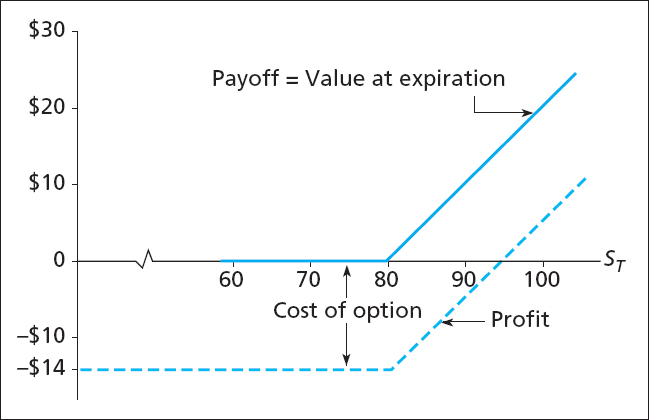
Call Option Payoff (Seller)
On the flip side, the gross payoff to the call option writer at
expiration is
\[\begin{split}C_T & = \begin{cases} X - S_T, & \text{if } S_T > X
\\ 0, & \text{if } S_T \leq X. \end{cases}\end{split}\]
The net payoff is
\[\begin{split}C_T & = \begin{cases} X - S_T + C_t, & \text{if } S_T > X
\\ C_t, & \text{if } S_T \leq X. \end{cases}\end{split}\]
Call Option Payoff (Seller)
\(\qquad\)
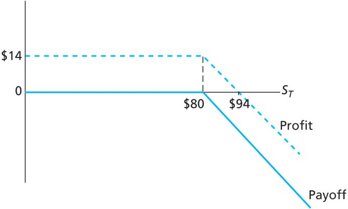
Put Option Payoff (Buyer)
The gross payoff to put option holders at expiration is
\[\begin{split}P_T & = \begin{cases} 0, & \text{if } S_T > X
\\ X - S_T, & \text{if } S_T \leq X. \end{cases}\end{split}\]
- If the underlying asset price is below the strike, the holder can
purchase it for \(S_T\) and immediately resell for \(X\),
yielding a profit of \(X-S_T\).
- If the asset price is above the strike at expiration, the option is
worthless.
Put Option Payoff (Buyer)
The net payoff to put option holders is
\[\begin{split}P_T & = \begin{cases} -P_t, & \text{if } S_T > X
\\ X - S_T - P_t, & \text{if } S_T \leq X. \end{cases}\end{split}\]
Put Option Payoff (Buyer)
\(\qquad\)
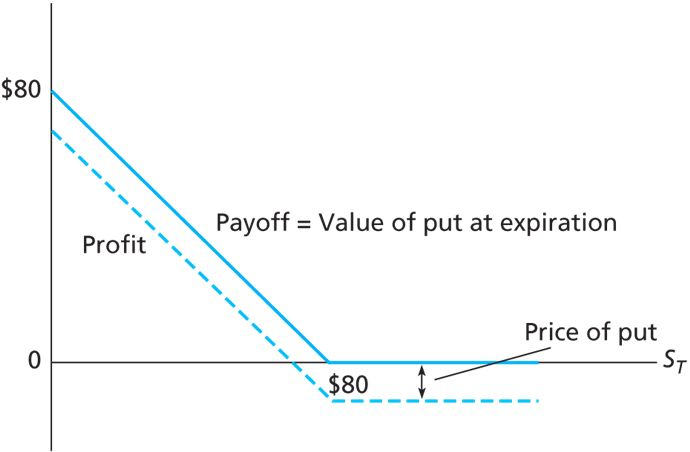
Speculation and Hedging
Options can be used for both speculation and hedging.
- Suppose you have $10,000 available for investment.
- A share of stock costs $100.
- An option with a strike price of $100 and six-month maturity costs
$10.
- You can lend money (purchase the risk-free asset) at a rate of 3%
for the next six months.
Speculation and Hedging
Consider three strategies.
- Strategy A: Invest entirely in stock, buying 100 shares at the
current price of $100.
- Strategy B: Invest entirely in at-the-money options, buying 10 call
contracts (each for 100 shares) selling for $1000 a piece.
- Strategy C: Purchase 100 call options (1 contract) for $1,000 and
invest the remaining $9,000 in the risk-free asset, which will
yield a total of \(\$9,000\times1.03 = \$9,270\) at the
end of the six months.
Speculation and Hedging
The values of the three strategies are:
\(\qquad\)
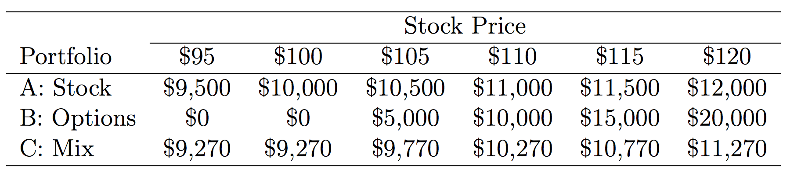
Speculation and Hedging
The returns to the three strategies are:
\(\qquad\)
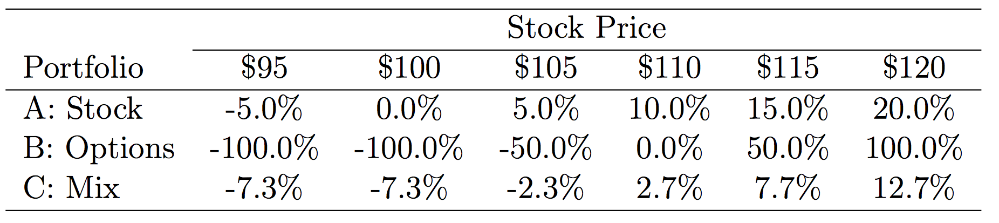
Speculation and Hedging
From these tables we see two features of options.
Options offer leverage.
- For the all-option portfolio, the return plummets to -100% when
the stock price is below the strike.
- The return rockets to numbers that are much greater than simply
holding the stock when the stock price increases above the
strike.
Speculation and Hedging
Options offer insurance.
- The mixed portfolio has limited downside loss: the investor can’t
lose more than -7.3%.
- It also has limited upside gains: if the stock price is above the
strike, its returns are always below the portfolio comprised of
only stock.
Speculation and Hedging
\(\qquad\)
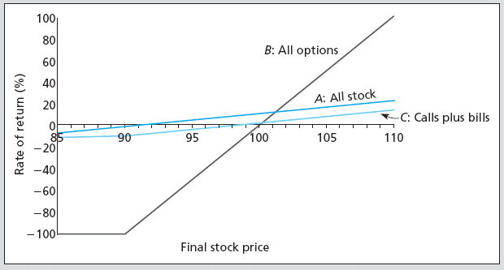
Protective Put
A protective put strategy consists of simultaneously purchasing a
share of stock and a put option on that stock.
- This limits the potential downside loss of the stock while leaving
the potential gains intact.
\(\qquad\)
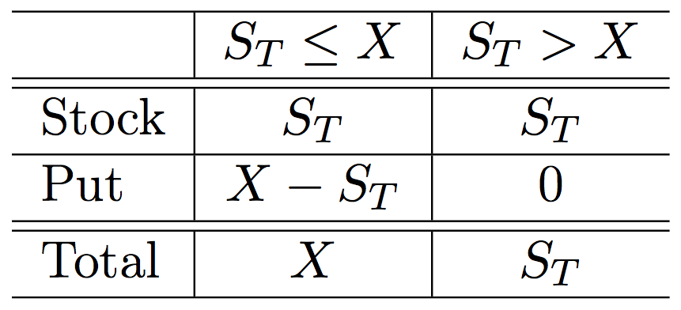
Protective Put
The put acts as insurance against loss.
- Comparing the net payoff of the protective put with the strategy of
holding stock alone shows that the former comes at a cost.
- This is the insurance premium.
Protective Put
\(\qquad\)
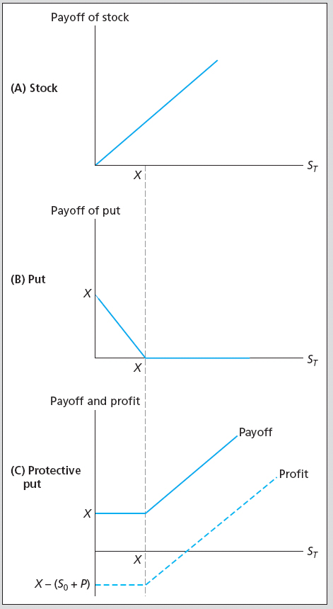
Protective Put
\(\qquad\)
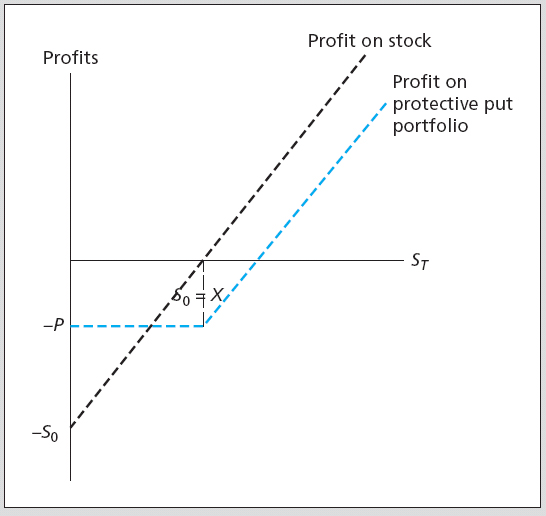
Covered Call
A covered call strategy consists of simultaneously purchasing a share
of stock and writing a call option on that stock.
- It doesn’t eliminate downside loss (like the protective put).
- It covers the obligation to deliver the stock for less than its
market value if the stock price is above the strike.
- The call writer is charging a premium (the call price) in order to
forsake the upside gain of holding the stock.
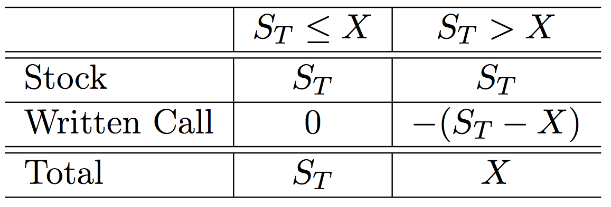
Covered Call
\(\qquad\)
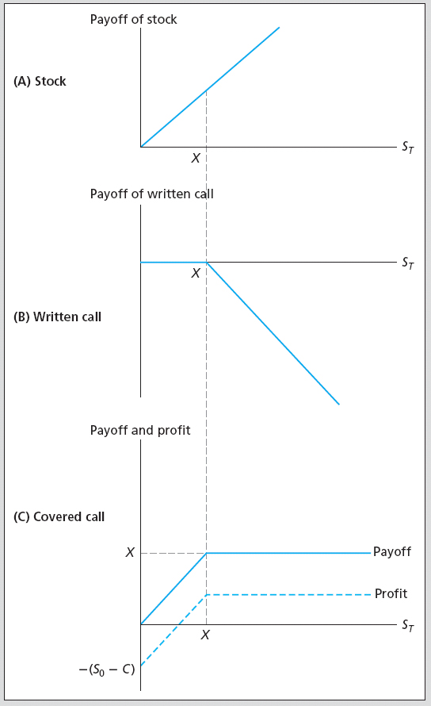
Straddle
A straddle consists of purchasing call and put options for the same
asset and strike price.
- It is a bet on volatility.
- The straddle holder will earn (gross) positive returns if the stock
price moves up or down, but nothing if it remains at the strike.
\(\qquad\)
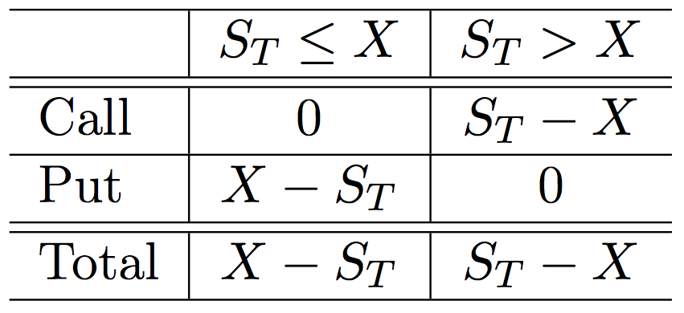
Straddle
So why doesn’t everyone hold straddles?
- Because the investor must pay for both contracts.
- The investor doesn’t earn a net return unless the stock price
moves enough to compensate for the initial outlay.
Spread
A spread is a combination of two or more options (both calls or both
puts) on the same stock with different strikes.
- Some of the options are purchased while others are sold.
- A money spread is the simultaneous purchase and sale of options with
different strikes.
- A time spread is the simultaneous purchase and sale of options with
different maturities.
Bullish Spread
A bullish spread:
\(\qquad\)
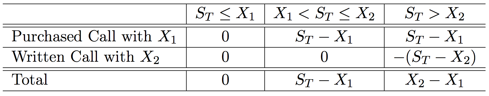
Bullish Spread
\(\qquad\)
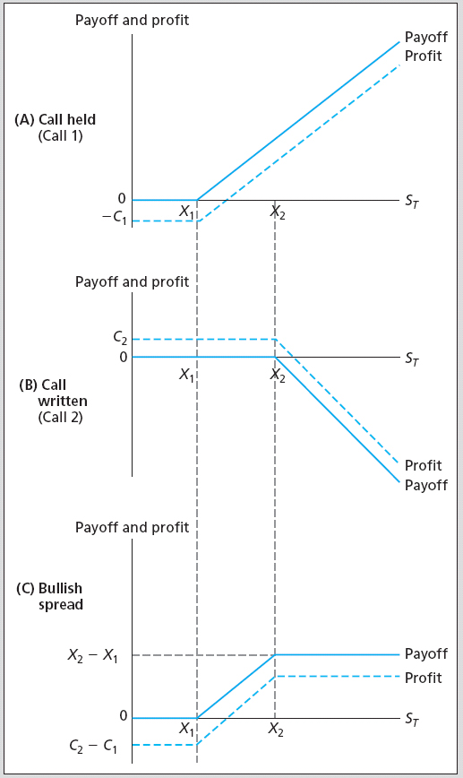
Collar
An example of a collar is the purchase of a protective put for one
strike price and the sale of a call option, on the same stock, for a
higher strike.
- This strategy eliminates downside losses below the strike of the put
and also upside gains beyond the strike of the call.
- In this case, the investor constrains gains and losses within a
region close to the current price of the stock.
Protective Put Alternative
A protective put eliminates the downside loss of holding stock. We
could achieve this with an alternative strategy.
- Purchase a call option with strike price \(X\).
- Purchase a T-bill (lend at the risk-free rate) with a face value
equal to the call strike price, \(X\), and the same maturity
date as the call.
\(\qquad\)
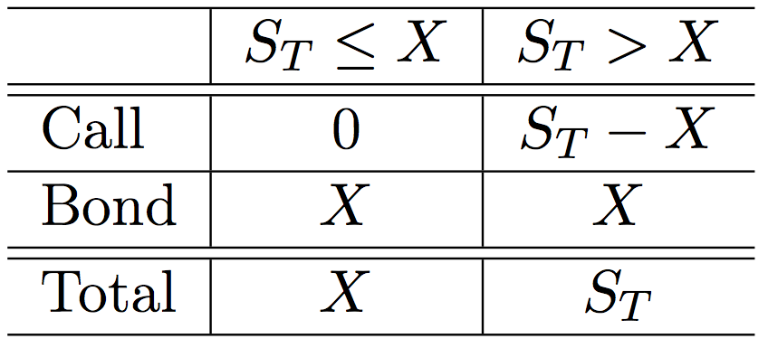
Put Call Parity
The payoffs in the previous table are identical to those for the
protective put.
- Hence, the cost of the protective put strategy should be equal to
the cost of the call plus bonds strategy (why?!!!).
- This fact is known as the Put-Call Parity Relationship.
- Mathematically, it can be expressed as:
\[\begin{split}C_0 + \frac{X}{1+r_f} & = S_0 + P_0.\end{split}\]
- This relationship is very useful because it allows us to compute the
value of a call option if we know the price of the corresponding
put, and vice versa.
Put Call Parity Example
Assume
- An asset currently sells for $110.
- A call option with strike \(X = \$105\) and 1-year maturity
sells for $17.
- A put option with strike \(X = \$105\) and 1-year maturity
sells for $5.
- The risk-free interest rate is 5% per year.
- Does the parity relationship hold?
Put Call Parity Example
\[\begin{split}C_0 + \frac{X}{1+r_f} & \stackrel{?}{=} S_0 + P_0.\end{split}\]
\[\begin{split}\$117 = \$17 + \frac{\$105}{1.05} & \neq \$110 + \$5 = \$115.\end{split}\]
- The relationship doesn’t hold.
- How might an investor take advantage of the situation?
Put Call Parity Example
\(\qquad\)
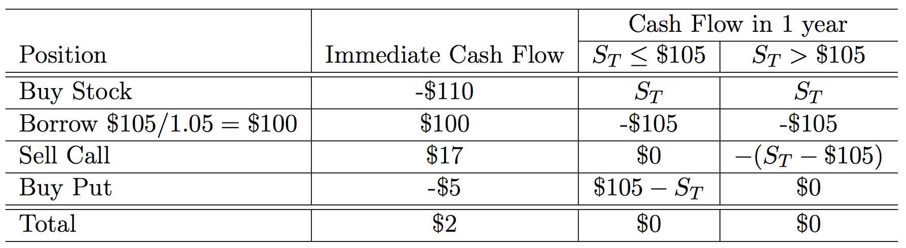
{kind=link}
{kind=link}
{kind=link}
{kind=link}
{kind=link}
{kind=link}
{kind=link}
{kind=link}
{kind=link}
{kind=link}
{kind=link}
{kind=link}
{kind=link}
{kind=link}
{kind=link}
{kind=link}
{kind=link}